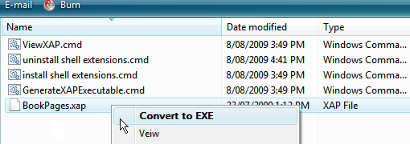

Overview
WPF (
Windows
Presentation Foundation)
is a framework (first introduced in .NET3.0) for building rich dynamic
GUI. Any C# script utilizing the
WPF classes can be executed by CS-Script as any other scripts. It is
possible because from the CLR point of view WPF classes are just
ordinary CLR classes.
That is it WPF
is nothing else but a collection of CLR classes.
WPF is directly related to XAML - another part of .NET3.0+.
XAML (
Extensible
Application Markup Language) is
a language for describing GUI layout and it's relationships with the
business objects. XAML primarily used in conjunction with WPF. Usually
it is used in a compiled form for initialization GUI layout at
runtime and as
such it does require it's own compiler.
It is
important to note that XAML has nothing to do with CLR. This is the
reason why scripts which are utilizing XAML has to be handled by the
script engine in a special way.
WPF script which are not using XAML do not require any special
treatment and can be executed normally.
Starting from version 1.9.0 CS-Script includes special edition of the
C# compiler capable of processing XMAL files. The following code
sample demonstrates how WPF script can use XAML:
Samples\WPF\Hello.cs
//css_inc Hello.xaml;
//css_ref WindowsBase;
//css_ref PresentationCore;
//css_ref PresentationFramework;
using System;
using System.Windows;
public partial class MainWindow : System.Windows.Window
{
public MainWindow()
{
InitializeComponent();
}
void OnClick(object sender, RoutedEventArgs e)
{
MessageBox.Show("Hello World!");
}
[STAThread]
public static void Main()
{
MainWindow wnd = new MainWindow();
wnd.ShowDialog();
}
} |
Samples\WPF\Hello.xaml
<Window x:Class="MainWindow"
xmlns="http://schemas.microsoft.com/winfx/2006/xaml/presentation"
xmlns:x="http://schemas.microsoft.com/winfx/2006/xaml"
Title="Hello World Application" Height="117" Width="280">
<Grid>
<Button Margin="108,27,109,34" Name="button1" Click="OnClick" >Say Hello</Button>
</Grid>
</Window> |
The code above is a
WPF multi-file "Hello World" script (
Hello.cs + Hello.xaml)
from CS-Script samples library (Script Library). Xaml file can be
included in the primary script as any other secondary script file: with
directive
//css_import
or
//css_include
(in short form
//css_imp
or
//css_inc).
Limitations
Unfortunately MS did not provide XAML compiler as a stand-alone
application. Instead MS has merged XAML compiler with
MSBuild.exe and in
this form it is used by CS-Script custom compiler
CSSCodeProvider.dll.
Such
approach is inconsistent with the way how C# code is usually
processed
by CS-Script. And that is why implementation of the XAML support may
change in future depending on MS decision to
ship stand-alone
version of XAML compiler.
You may also notice that WPF scripts and executables produces from the
scripts sometimes demonstrates slight startup-delay. This is a .NET
bag, which was already reported to MS
(https://connect.microsoft.com/feedback/ViewFeedback.aspx?FeedbackID=273495&SiteID=212).
Silverlight
Silverlight is a subset of WPF and as such does not require any special
technique to be executed as a script: you just need to reference
appropriate assemblies and include code-behind and XAML files
(this can change in the future). However CS-Script offers an
interesting technique for viewing Silverlight content without a
browser: Silverlight Player script (<cs-script>\Lib\silverlight.cs).
Execute the following command in command to playback XAP file (e.g.
myApp.xap):
cscs silverlight myApp.xap
Silverlight Player is a viewer for XAP (compressed Silverlight
content) files. Silverlight Player is capable not only rendering
Silverlight content but also generating self-sufficient executable from
XAP file.
Thus you can convert XAP file into WinForm executable which can be
executed on any Windows PC having Silverlight runtime installed. It
does not require any other files to be distributed or even temporary
created on target PC at runtime as it hosts it's own built-in
Web server, IE Web browser and contains XAP file as embedded
resource.
Execute the following command in command prompt to convert XAP file into self-sufficient executable (e.g.
myApp.xap ->
myApp.exe):
cscs silverlight /exe myApp.xap
To allow
using Silverlight Player by right clicking XAP files in
Windows Explorer the "View" and "Convert to EXE" shell extensions have
been made available. They can be installed by executing corresponding
batch files from <cs-script>\Samples\Silverlight directory.

Silverlight Player script was inspired by Tamir Khason effort described here:
http://blogs.microsoft.co.il/blogs/tamir/archive/2008/05/02/stand-alone-multiplatform-silverlight-application.aspx.
Silverlight content sample (BookPages.xap) is taken from
SOTC: programming and
development tutorial blog.
See Also
Alternative
compilers |
Script
Library |
Importing
scripts